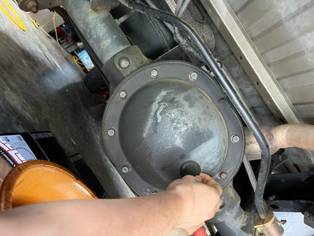
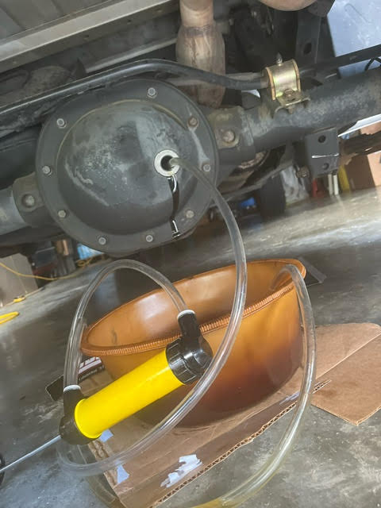
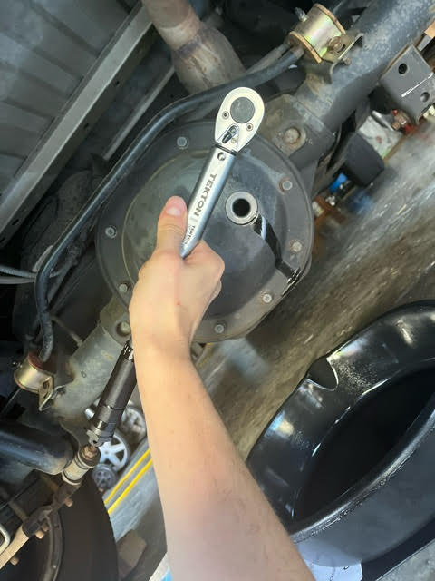
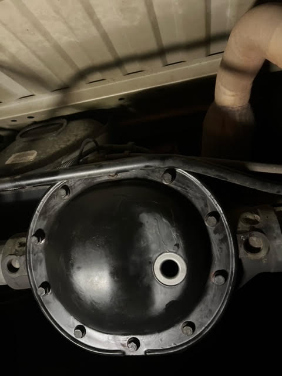

Step One: use the jack tools that came with the car to lower the spare tire out of the way. This will help you to access the rear differential gear.
Step Two: place cardboard and a drip pan under the differential gear to catch the old fluid. Remove the rubber fill plug as depicted.
Step Three: using an inexpensive fluid transfer pump, pump the old fluid out of the gearbox to reduce mess when you open the cover. Driving the car beforehand will make the fluid less viscous and easier to pump.
Step Four: Using a 1/2 in socket, loosen and remove the bolts that hold on the cover of the differential gear.
Step Five: Old gasket material can be extremely difficult to remove. If removal with a razor is necessitated, use caution as not to scratch the mating surface.
Step Six: Reinstall cover with a new gasket. Torque bolts to correct specification for the exact trim and year of your vehicle.

Step Seven: Add new fluid until it runs out of the fill hole, then reinstall fill plug. Make sure to add limited slip additive if your vehicle's build sheet indicates that it has a limited slip differential.